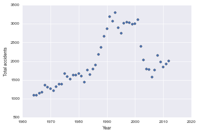

Project 1: Investigating Trends in Icelandic Accidents
Have Icelanders suffered from more or less accidents over the time?
I fell in love with Iceland, the country known for Vikings, volcanoes and a variety of natural wonders, on my first visit and vowed to come back, which I did only a couple of years later.
As much Iceland is known for Northern Lights watching, I am known for being prone to minor and major accidents.
So when it was time for my first foray into data science, my eyes naturally fell on a data set that let me explore the trends in Icelandic accidents.
I asked: Have Icelanders suffered from more or less accidents over the time?
You can check my code in this GitHub repository and view the annotated analysis in this IPython Notebook.
Tools used
- pandas
- matplotlib
- pylab
- SciPy
- seaborn
- IPython Notebook
How It Went
Get Data
I downloaded the data from the State Social Security Institute and Icelandic Health Insurance website in a csv file. The data were last updated on 10th January 2014 and included the number of accidents and the number of fatal accidents in Iceland between the years 1964 and 2012 expressed as the number of accidents per 100,000 individuals.
This is important as the population in 2012 was at 170% of that in 1964 and not accounting for this would bias the results for more accidents in the later years making Icelanders appear more clumsy, which we don't want!
Read Data
I used the IPython Notebook for the actual analysis as it allows easy documentation of the steps and sharing of the results - which are so important for data scientists.
def read_file(name='healthIceland.csv'): # open data direcly as pandas.core.frame.DataFrame df = pd.read_csv(name) # assign the proper column name 'Year' to the 1st column df.columns = ['Year', 'Total accidents', 'Total fatal accidents'] return df
I loaded the data into a pandas data frame. I love working with pandas because they allow for easy computation, basic statistical analysis and visualisation - everything I needed for this analysis! I also added a 4th column to the data set which included the calculated number of fatal accidents as a percentage of total accidents.
Look At Changes Over Time
It was time to look at the changes in accident over time. From simple plots, I learned that is seemed that the number of accidents in Iceland has been steadily increasing with a bump of even more accidents between 1990-2000. Have there perhaps been more accident-prone tourists in that time?
On the other hand, it seemed that the number of fatal accidents has been going down steadily. Perhaps due to advances in the Icelandic health care?
I wanted to know if these changes over time were statistically significant. To determine whether to use parametric or non-parametric tests I looked at the distribution of the data (which pointed at non-parametric)

and then ran scipy's skew, kurtosis and normal tests (with pylab's plots), which confirmed that non-parametric - Spearmen's correlation - tests will be in order. Spearmen's correlation tests then let me conclude that the changes over time were statistically significant.

Sum It Up
I learned that the number of accidents in Iceland has significantly increased over time, with a curious further increase in the 10-year period between 1990-2000. I would be curious to find out why that is the case. I suspect there were more tourists in that time?
I have aso learned that the number of fatal accidents in Iceland has significanly decreased over time. There I suspect improvements in health care.